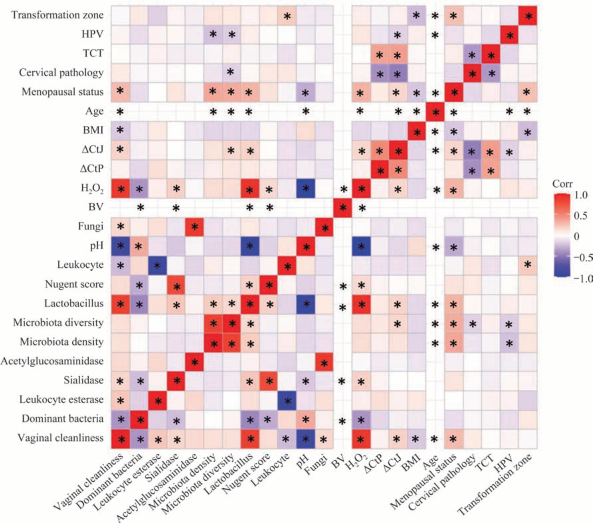
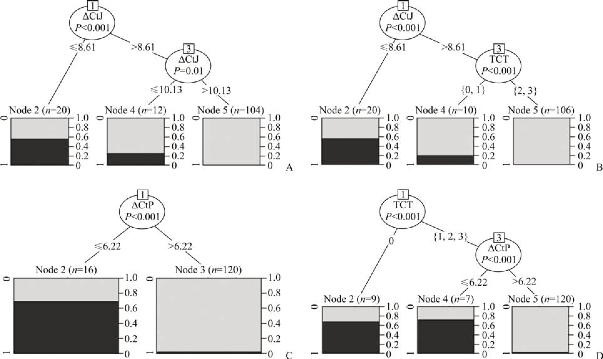

1Background & Objective
- Limits of hrHPV/LBC: hrHPV low specificity; LBC sensitivity 50–80% & subjective ASC-US reads.
- Objective: evaluate JAM3/PAX1 methylation vs LBC for HSIL — alone or combined.
2Study Design & Cohort
122
non-HSIL
14
HSIL
2021.6–22.6
colposcopy clinic
ΔCtP
group difference P<0.05
ΔCtJ
group difference P<0.05
LBC
group difference P<0.05
- Inclusion: confirmed histology; LBC+hrHPV+colposcopy; sexual history; no treatment in 6 mo.
- Exclusion: menstruation; known genital cancer; autoimmune/immunosuppression; pregnancy/lactation; HPV vaccination.
- Design: retrospective, Xiangya 3rd Hospital colposcopy clinic.
- Assays: LBC · hrHPV · histopathology · vaginal microecology · ΔCtP/ΔCtJ.
- Model: conditional inference tree (R party) for classification.
- Statistics: t-test / Wilcoxon · χ² / Fisher · Pearson correlation.
NS
age · BMI · HPV type
NS
menopause · TZ type
0.037
flora diversity P
- Variables: demographics · LBC · hrHPV · histology · microecology · colposcopy TZ · ΔCtJ/ΔCtP.

Fig. Correlation heatmap — pathology negatively linked to ΔCtP, ΔCtJ, LBC, flora diversity.
Ethics No. 23137 · Hunan Clinical Innovation Project 2020SK53604.
3Correlations with Lesion Grade
- Methylation ↑ (ΔCt ↓) tracks HSIL — stronger than LBC; age/BMI/HPV type & menopause ns.
4Conditional Inference Tree & Decision Rules

Fig. Tree splits on ΔCtJ → ΔCtP → LBC — gray = non-HSIL, black = HSIL (probability 0–1).
ΔCtJ >10.13
100% non-HSIL — safe deferral
ΔCtP >6.22
97.5% non-HSIL (117/120)
ΔCtJ >8.61 + ASC-US/NILM
99.1% non-HSIL
ΔCtJ ≤8.61
20 (9/11)
non/HSIL ~1:1
8.61 < ΔCtJ ≤10.13
12 (9/3)
HSIL falls
ΔCtJ >10.13
104 (104/0)
all non-HSIL
ΔCtP ≤6.22
16 (5/11)
mostly HSIL
ΔCtP >6.22
120 (117/3)
97.5% non-HSIL
LBC = HSIL
9 (3/6)
3 non / 6 HSIL
- Negative rule out: high ΔCt safely excludes HSIL — fewer colposcopies.
- ≥ LBC alone: methylation alone not inferior to combined LBC models.
- Add-on: improves LBC accuracy; objective & self-sampling friendly.